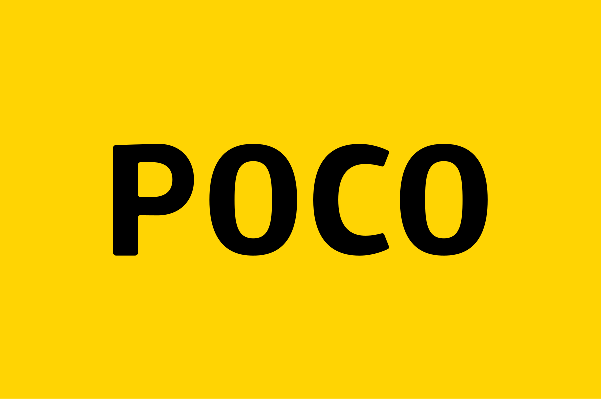

Brand yang kami support

Untuk series poco

UBL adalah singkatan dari Unlocked Bootloader, yaitu proses membuka bootloader pada ponsel Android. UBL merupakan langkah awal untuk melakukan flash ROM dan rooting pada Android.
Custom ROM adalah versi modifikasi sistem operasi Android yang dibuat oleh pihak ketiga, bukan oleh produsen perangkat. ROM kustom ini bisa menggantikan sistem operasi Android bawaan
Menghapus aplikasi bawaan, Mengoptimalkan kinerja, Memperpanjang masa pakai baterai, Menyesuaikan tampilan dan fungsi perangkat, Meningkatkan kecepatan, Menginstal aplikasi yang sebelumnya tidak dapat diinstal.
Custom ROM memiliki beberapa kelebihan, di antaranya: Performa lebih baik Custom ROM dapat meningkatkan performa perangkat Android, terutama pada perangkat yang lebih tua. Kustomisasi lebih tinggi Pengguna dapat memodifikasi antarmuka, menambahkan fitur baru, dan menghapus aplikasi bawaan yang tidak diperlukan. Privasi dan keamanan lebih baik Beberapa Custom ROM menawarkan kontrol privasi yang lebih ketat dan fitur keamanan tambahan. Akses ke versi Android dan patch keamanan terbaru Pengguna dapat menikmati fitur dan pembaruan keamanan terbaru meskipun dukungan resmi perangkat mereka telah berakhir. Mudah mengatasi memori yang penuh Custom ROM dapat membantu mengatasi memori penuh dengan membersihkan berkas sampah.
Email: rcusrom@gmail.com
Hubungi saya lewat Telegram